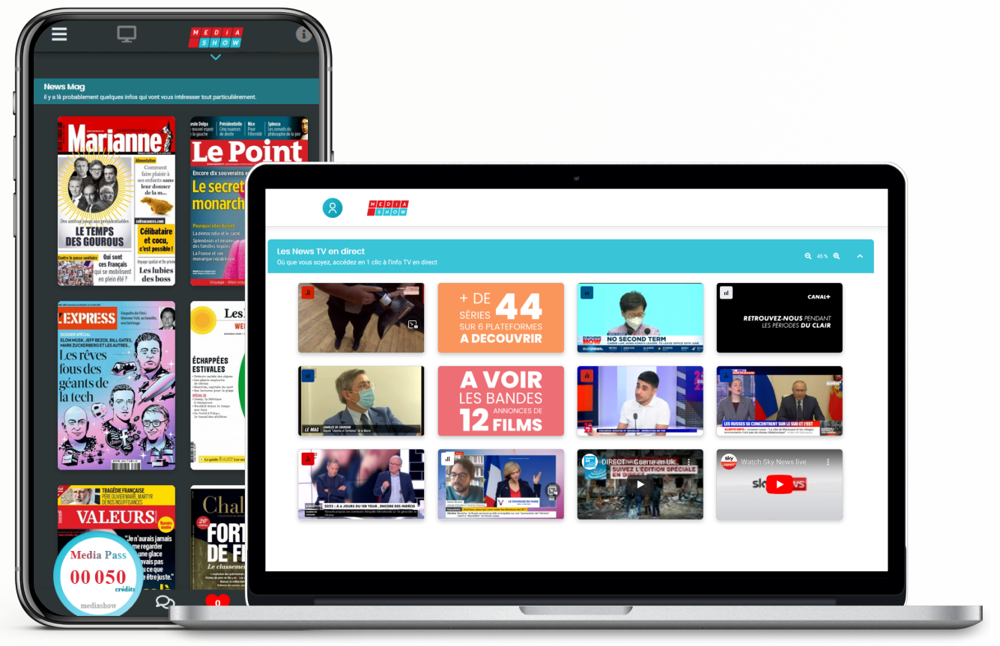

Un kiosque virtuel des médias Live, Print et délinéarisés

Mediashow propose, en plus du showroom des marques, un showroom des médias pour découvrir en un clin d’œil
et accéder en un clic à de multiples contenus et divertissements, ce qui en fait un kiosque virtuel pour mobile et desktop.
On y trouve des contenus TV et Radio, Podcast et Replay, presse, musique, cinéma, web, appli, jeux vidéo, etc.